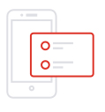
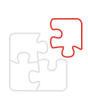
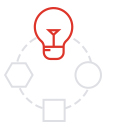
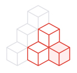
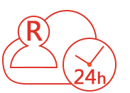
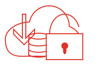

这是一款构建在云端的轻量级办公管理系统，系统实现了经营、管理、审批、协作、共享等管理要求，并依托腾讯企业微信，实现消息沟通、视频会议、业务提醒，为小微企业创建造了一个独有、安全的云端办公管理平台。
北京中软融鑫计算机系统工程有限公司是具有20年经验的国内金融行业顶级管理软件开发商，长期服务于一行三会以及各大金融机构，如今结合自身的业务优势、软件开发优势特为小微企业推出融鑫云OA系统，希望能够以更低的门槛、更优质的产品来助力小微企业腾飞！
融鑫云OA是一款构建在云端的轻量级经营管理系统，以经营为核心，实现了企业员工管理与协作、事务审批、信息共享等，并依托腾讯企业微信，实现消息沟通、视频会议、业务提醒，为小微企业创建造了一个独有、安全的云端办公管理平台。
|  |
简单
用户只要会用微信就会使用，而管理员通过手机就可以完成配置管理。 |
 |
专业
基于二十年管理经验，集合最新的管理理念打造而成，满足企业经营、管理、沟通、协作、共享各方面需求。 |
|  |
独有
提供一个企业独有的工作“微信”，构建企业独有的工作空间，提高员工工作专注性。 |
 |
零基础投入
除了软件使用费，只要员工拥有手机就可使用，企业无需投资购买任何软硬件，甚至也不需要IT专业人员参与，不懂计算机也可进行管理。 |
 |
免费升级
系统不提供个性化的开发服务，但是您可以提需求反馈给我们，如果是普适需求，我们就会开发，而且免升级费哦。 |
-
- 帮您建
-
这是一套开通即用的内部经营管理系统，您无需购买软硬件设备、无需构建IT基础环境，一切都由我们来提供。
-
- 帮您管
-
审批规范、工作规则、事项提醒、统计汇总均由系统提供，您可以一身轻松地投入到企业的主营业务发展中去。
-
- 帮您记
-
您安排的工作任务、员工的工作情况、企业的办事流程、各类新闻信息等在系统中办理过的数据均由系统完整记录，您不必担心数据丢失。
-
- 帮您查
-
当您需要查找数据时，无论是用户信息还是日报、任务、信息、审批，您输入关键字就可以快速找到您所需的内容。

|
 |  |
| 云OA开通 | 云OA运行服务 | 基础软硬件 |
|
开通企业微信； 建立企业通讯录； 部署业务模块； 辅导企业管理员授权与管理。 |
7*24小时在线客服； 电话、邮件、QQ、微信多渠道服务方式； 免费升级。 |
云端应用服务器（负载均衡、弹性扩容） 云端数据库服务器（双机热备、数据高可靠） 云端安全防护（防DDoS共计、暴力破解密码拦截、木马查杀、异地登录提醒、高位漏洞修复防入侵、拦截风险SQL） 云监控（站点监控、云服务器监控、报警） |